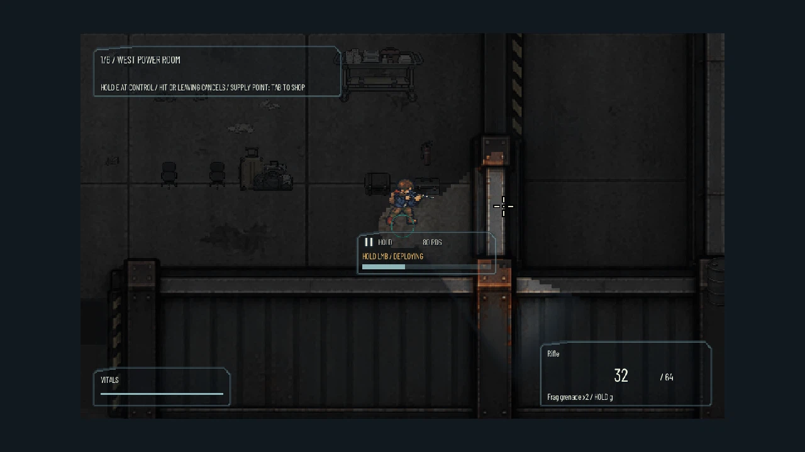
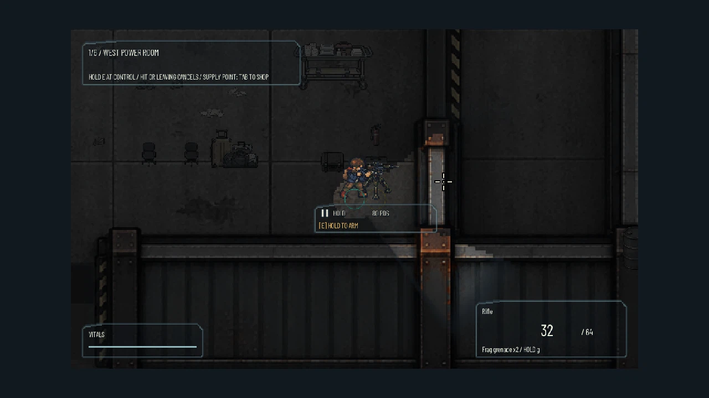
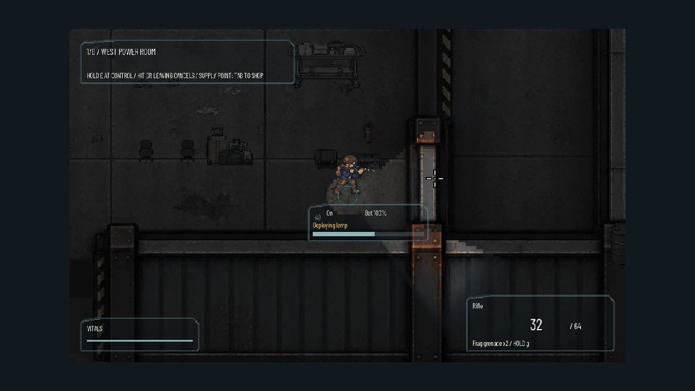
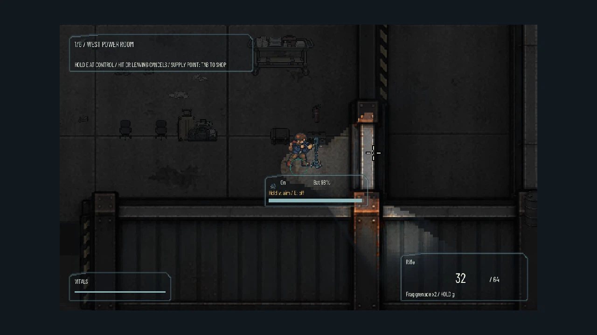
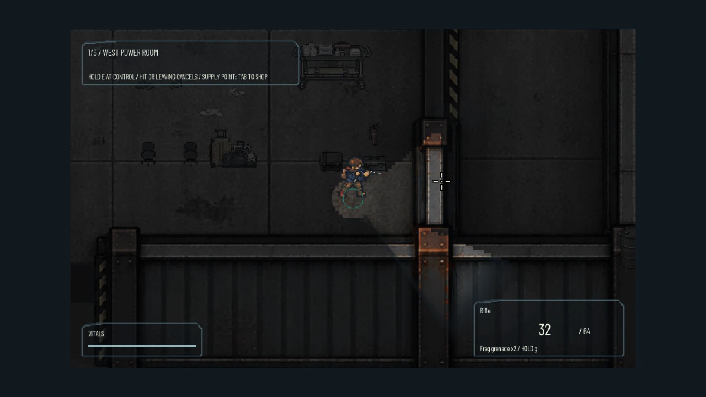
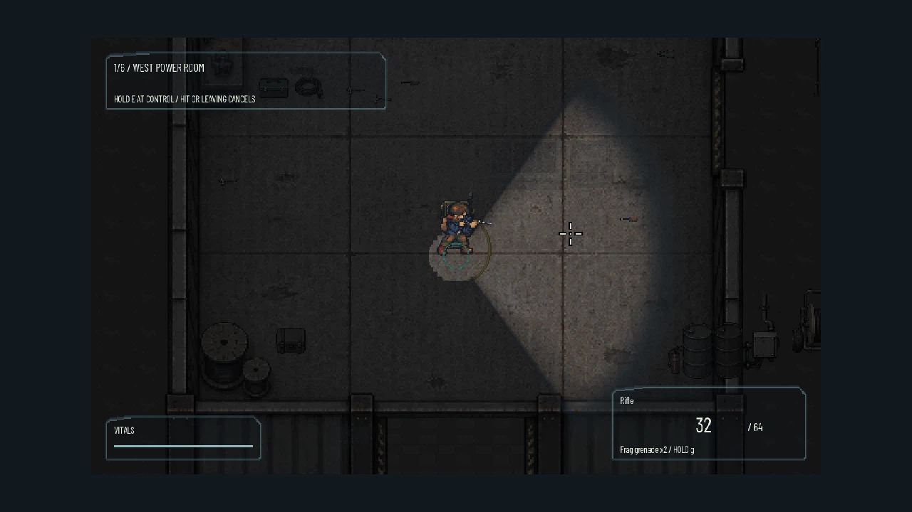
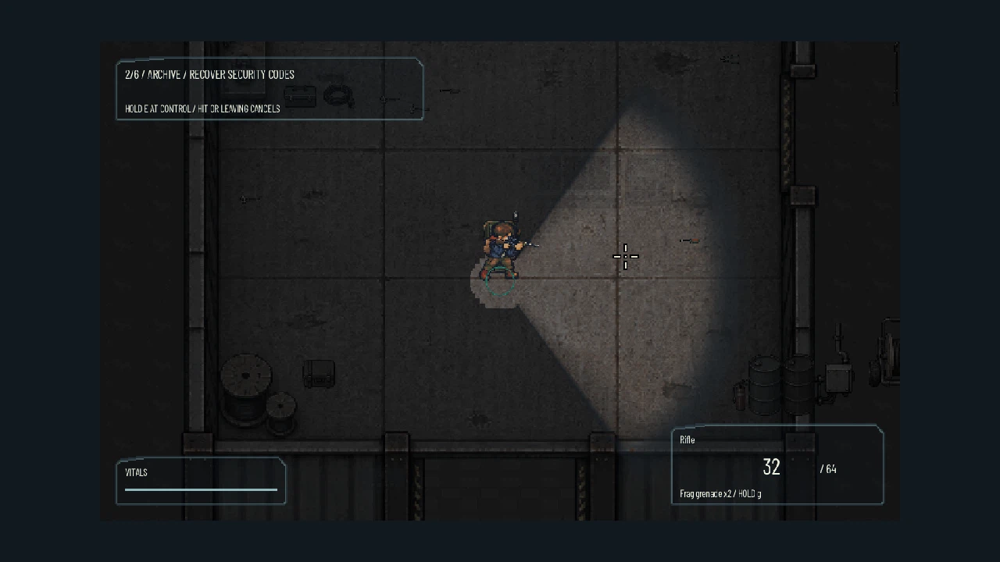

Sight cache inspection
Read-only comparisons at the captured tick. No actor memory, explored terrain, animation, or world state is reset.

service_range_experiment.json / 5_deploying.png / cache match: True
service_range_experiment.json / 5_deployed.png / cache match: Trueservice_range_experiment.json / 5_packed.png / cache match: True
service_range_experiment.json / 5_deploying.png / cache match: True
service_range_experiment.json / 5_deployed.png / cache match: True
service_range_experiment.json / 5_packed.png / cache match: True
seamless_power_trigger.json / 5_live_entry.png / cache match: Trueseamless_power_trigger.json / 5_before_trigger.png / cache match: True
seamless_power_trigger.json / 5_after_power.png / cache match: Truepassed: Full-grid cached/reference CPU and GPU upload equivalence; not final composition, performance, or visual acceptance.